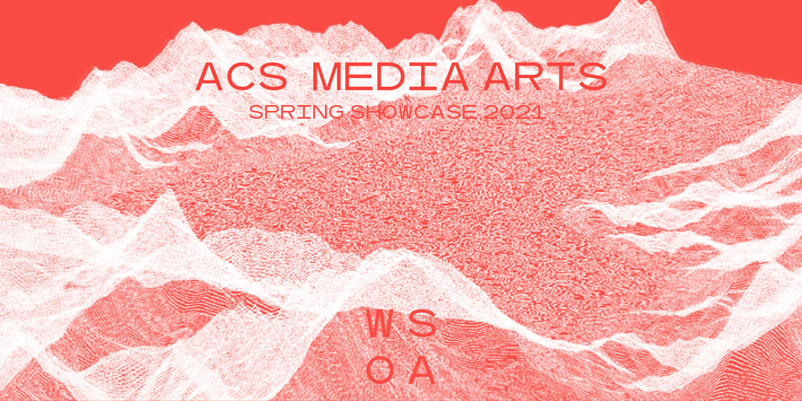

Please join us on Friday April 30th from 5-6pm for a celebration of our graduating thesis students as well
as selected work from ACS-Media Arts spring studios. Student videos, games assets, objects and experiences
will be displayed in a virtual environment modeled after the former WUHO gallery of the School of Architecture.
It will be a fun and interactive event that can experienced on a head set or on a computer. Mobile devices are not supported.
The link below will be active on Friday, April 30th at 5:00pm